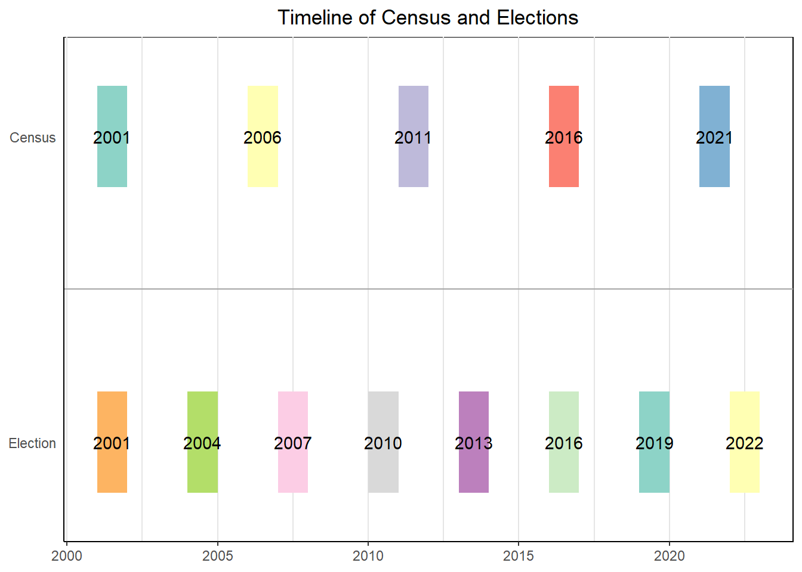

Chapter 1 Data
1.1 Data Sources
The first in the process was to source demographic and electoral data, which has been provided from two sources:
The Australian Electoral Commission (AEC) (Commission 2023b) . The AEC contains detailed online records for every federal election held in the 21st century, through their Tally Room website (Commission 2023a).
The Australian Bureau of Statistics (ABS) (Statistics 2023b). The ABS provides a wide number of national statistics and is responsible to conduct a national census of population and housing every 5 years. Comprehensive census data is provided in multiple formats, including csv files through Census Data Packs (Statistics 2023a), which are available for censuses from 2006 onwards.
Both organisations are the authoritative source for electoral and statistical data in Australia, and the data is provided openly. Although there are no quality issues, the way that data is provided presents other challenges, namely:
- In both cases, data are provided in large volumes and exhaustive granularity. If not done effectively, data extraction and aggregation can be time-consuming and resource intensive.
- Census data points are provided using the ABS own geographical standard - and only a small selection of census data is provided at the electoral division level. Conversion between ABS geographical structures and electoral divisions is not straightforward as there is no 1:1 correspondence. Both geographical systems change from election to election and census to census.
- Despite the best efforts of both organisations in keeping consistency, names of electorates, parties, and census attributes change over time - to compare similar statistics manual mapping is necessary.
To address these issues and ensure repeatability, three R packages have been written to undertake this task:
- {auspol} (Yáñez Santibáñez 2023b), which extracts and presents electoral results.
- {auscensus} (Yáñez Santibáñez 2023a), which allows to interact with Census Data Packs to extract different statistics across geographical units, and across censuses.
- {aussiemaps} (Yáñez Santibáñez 2023c), which assists with aggregating census data into electoral divisions, by matching and apportioning different geographical structures.
The appendix contains a vignette for each package, explaining their respective modus operandi. At a higher level, the extraction pipeline for this project is represented by figure 1.1.
Figure 1.1: Flow of data from sources to dataset
In summary, the process followed consisted of the below steps:
Census data was extracted from the respective Census Data Pack using {auscensus}. Using the package workflow, key attributes were identified in each census, extracted from the respective files and given common names. Data were extracted for statistical areas and apportioned into Commonwealth Electoral Divisions by overlapping area, with the help of functions written into {aussiemaps}
Primary vote results for each division were extracted using the auspol package.
All the data was stored in a local database, from where was extracted and put together in a single dataset.
From there, the “raw” data was further processed and stored in a single “consolidated” dataset.
1.2 Data Selection
1.2.1 Census and Election Years
The first to address when extracting the data is to establish a correspondence between census and election data. Since election the census cycle (5 years) does not match the electoral cycle (determined by the incumbent government, with a 3-year term for the House of Representatives), there is a potential problem of the census data not being completely representative of the population on a given election day. Figure ?? presents the best matches between both events held in the 21st century.

Considering the census data available and selecting the elections closer to each census, four pairs of events were selected for data extraction. there are presented in table 1.1
Census | Election |
|---|---|
2006 | 2007 |
2010 | 2011 |
2016 | 2016 |
2021 | 2022 |
Please note that this selection will remove half of the elections within the period, which may have an effect on model accuracy. However, since the objective is not to obtain an accurate prediction this has been accepted as a trade-off to avoid having to interpolate demographic attributes between censuses - which is also subject to inaccuracies given the rapid demographic changes experienced in Australia’s main cities.
1.2.2 Electoral Data
In the case of the electoral data. not much processing was required. The source data already contains records of primary voting for each electorate and only percentages have been calculated. In addition, the number of total votes per party at the national and state level have been calculated. A sample of the extracted data is presented in table 1.2.
Year | Division | Abbreviation | Party | Votes | Percentage |
|---|---|---|---|---|---|
2022 | Canberra | ALP | ALP | 34,574 | 45.2% |
2022 | Canberra | GRN | GRN | 19,240 | 25.2% |
2022 | Canberra | COAL | Liberal (Coalition) | 16,264 | 21.3% |
2022 | Canberra | Other | Other Parties | 6,417 | 8.4% |
1.2.3 Census Data
As mentioned in section 1.1, a major challenge with respect of census data is the large volume of data points collected. For instance, the data pack for the 2022 Census contains 62 different tables, ranging from 8 1 to 1,590 2 attributes.
To select which variables to extract, literature and journalistic sources were consulted ((Biddle and McAllister 2022), (Parliament, n.d.), (Jakubowicz and Ho, n.d.a)) to inform an initial set of covariates. In total (XYZ) variables were selected, which correspond to below to the following groups:
Income : Distribution of population in pre-set income brackets.
Education Level: Distribution of educational achievement (from incomplete secondary to vocational education and academic degrees).
Age: Distribution of the population in generational cohorts. Taking into account the selected elections, the four groups of interest are Baby Boomers (1946 to 1964), Generation X (1965 to 1980), Generation Y (1981 to 1996) and Generation Z (1997 to 2021).
Relationship status: Variables describing civil status (e.g. living alone, married, in a de facto relationship).
Household type: Descriptors of type of housing , (e.g. standalone house, semi-detached, flats).
Household tenure: Descriptors of house ownership, rental or other arrangement (e.g. public housing).
Citizenship: Percentage of the population that hold Australian citizenship. Although non-citizens are not entitled to vote, this variable can be taken as a proxy for relative integration of migrant communities into civic life.
Religion: Percentage of the population declaring to profess a religion. For this analysis, largest and high growth religious groups were selected (No religion/secular, Roman Catholic, Anglican-Presbyterian-Uniting, Christian Orthodox, Other Christianity, Islam, Hinduism, Buddhism).
Language: Languages spoken in the community. Similar to religion, a selection of relevant language have been included to reflect the historic and current migrant communities.
Apart from those, each electorate has been classified as metropolitan if it lies within the boundaries of Australian capital cities or non-metropolitan if not. Altogether, these variables try to reflect wealth and education (cited by (Biddle and McAllister 2022) as key factors in deciding political persuasion), as well as stage in life and belonging to a particular migrant community (sometimes cited as an influential factor, for instance in (Jakubowicz and Ho, n.d.b)).
1.3 Data Exploration
In total, the resulting dataset is made up of 4 response variables and 55 potential predictors, plus identificatory attributes like division mane and election year. As expected, an initial inspection shows that some of the covariates are loosely correlated with primary vote. Also expected, many of the covariates exhibit medium to high correlation levels amongst themselves, e.g. negative correlation between high and low level income groups, and certain age brackets with houselhold type and tenure.
As examples, figure 1.2 show a somewhat weak correlation between Coalition primary vote and percentage of baby boomer population. Figure 1.3 presents the correlation values for religion and language attributes that aside from expected pairings (e.g. Hinduism and South Asian languages or Italian speakers and percentage of declared catholics), there is a almost exclusive positive correlation between membership to Anglican, Presbyterian and Uniting churches and percentage of monolingual English speakers. The percentage of monolingual English speakers is also negative correlated to all other language groups.
Figure 1.2: Correlation between Coalition vote and Baby boomer population
Figure 1.3: Correlation for selected covariates
Besides from this, it is worth noticing that :
There is no apparent change in the relationship between a given covariate and the responses when broken down by state or capital city.
There are also no obviously distinguishable differences when splitting results by each election.
1.3.1 Dimensionality reduction using Multiple Factor Analysis
Given the large number of variables and considering their correlation, it is worth exploring if a change of space could help to better identify variation, and whether the number of covariates can be reduced in a meaningful way. For this multiple factor analysis (MFA) (Escofier and Pagès 2008) was used, given that:
MFA allows to use variables that belong to groups.
Allows to combine quantitative and qualitative variables.
Figure 1.4: Scree plot for MFA
Dimension | eigenvalue | percentage of variance | cumulative percentage of variance |
|---|---|---|---|
Dim 1 | 4.528 | 37.989 | 37.989 |
Dim 2 | 2.152 | 18.056 | 56.045 |
Dim 3 | 1.757 | 14.742 | 70.788 |
Dim 4 | 0.842 | 7.067 | 77.855 |
Dim 5 | 0.519 | 4.358 | 82.213 |
Dim 6 | 0.460 | 3.864 | 86.076 |
Dim 7 | 0.343 | 2.876 | 88.952 |
Dim 8 | 0.252 | 2.116 | 91.069 |
Dim 9 | 0.217 | 1.817 | 92.886 |
Dim 10 | 0.135 | 1.129 | 94.015 |